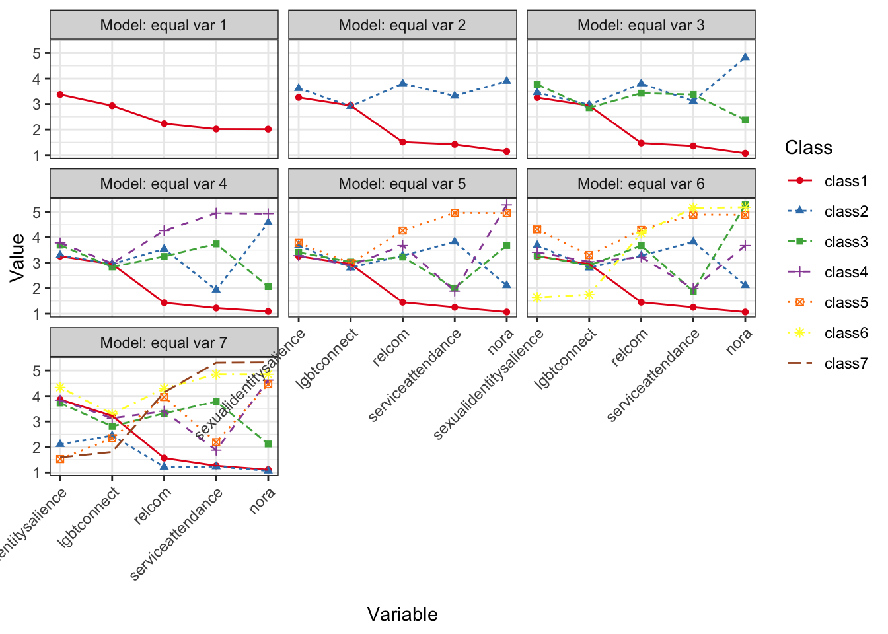
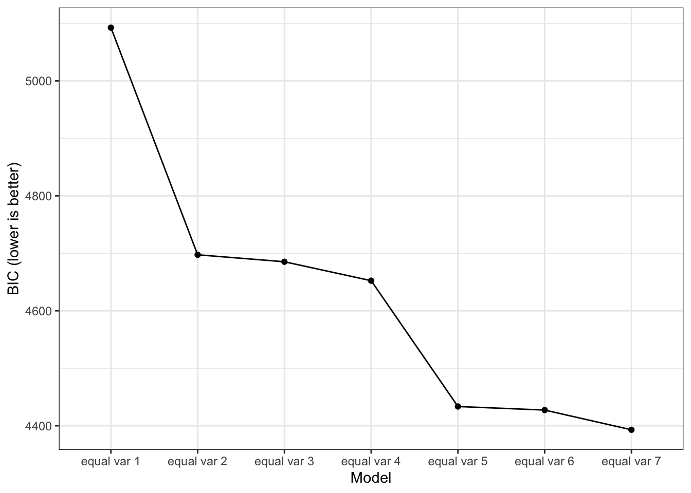
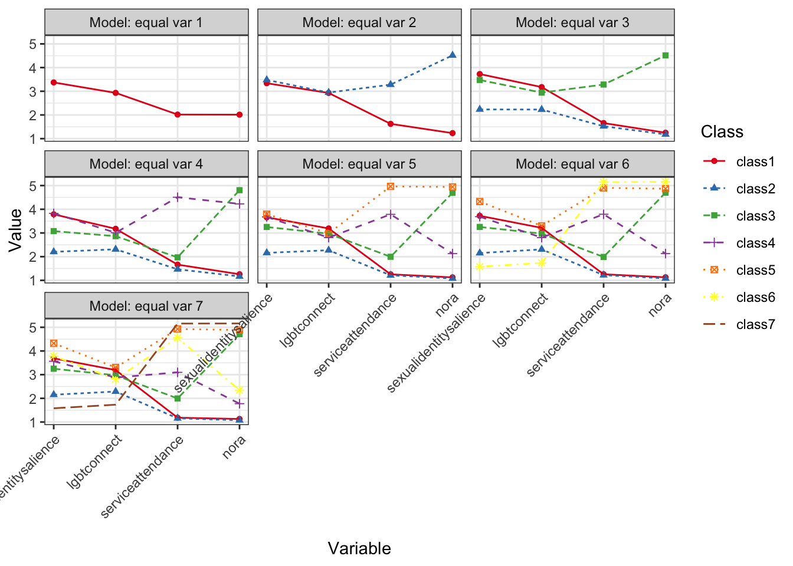
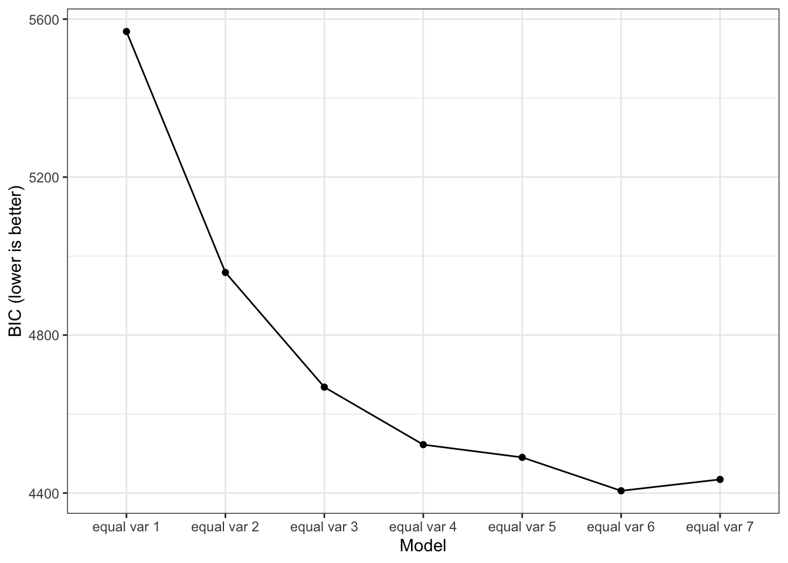
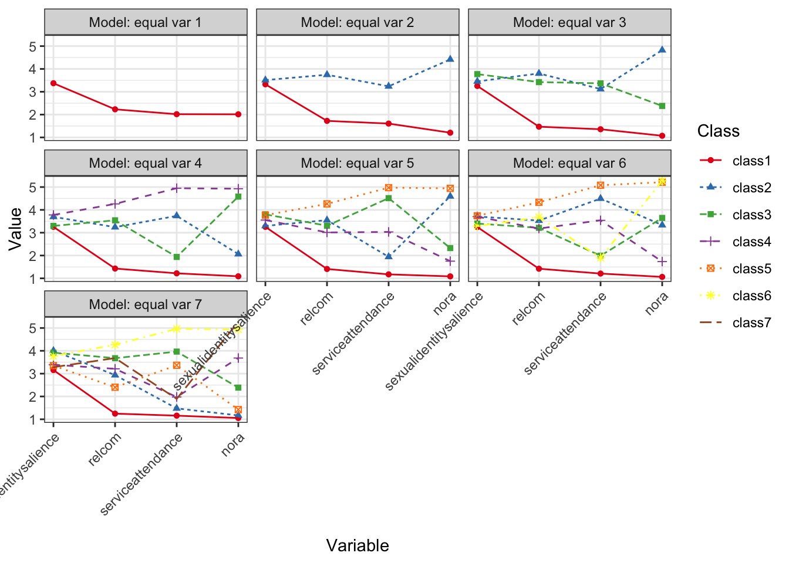
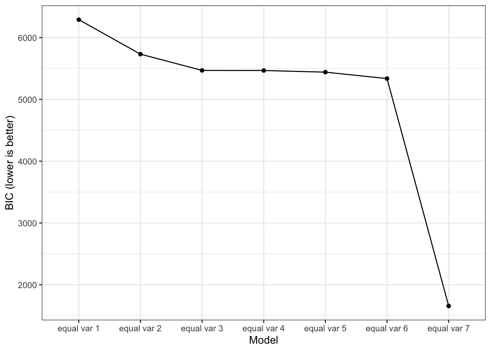
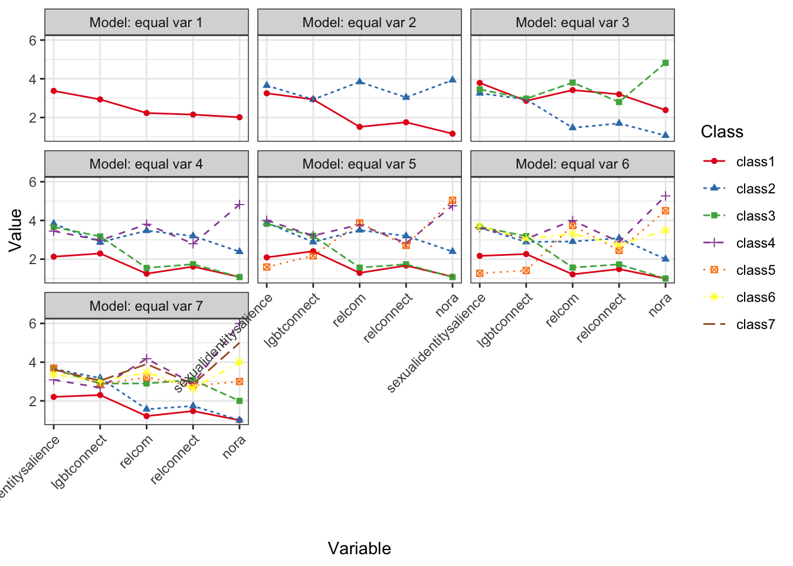

Show the code
# install.packages("pacman") # install if you don't have this package
pacman::p_load(tidySEM, haven, tidyverse, future, progressr, gt, nnet, OpenMx)
set.seed(54321)
options(mc.cores = 8)
plan(multisession)
handlers("progress") The following changes have been made:
# install.packages("pacman") # install if you don't have this package
pacman::p_load(tidySEM, haven, tidyverse, future, progressr, gt, nnet, OpenMx)
set.seed(54321)
options(mc.cores = 8)
plan(multisession)
handlers("progress") org_data <- read_sav("prri_final_shareable.sav")
data <- org_datanames(data) <- tolower(names(data))
data$poc <- rowSums(data[, c("black", "americanindian", "asianamerican", "latine", "mena")])
data$racsum <- rowSums(data[, c("white", "black", "americanindian", "asianamerican", "latine", "mena")])
# Subset the data, where if POC then keep, otherwise remove.
data <- data %>%
filter(poc > 0)
ref_data <- data
data <- data %>%
filter(!(responseid %in% c("R_BzwG6ehjWl0zgRz", "R_1nPF8RGMaq0IFME")))
data <- rename(data,
"filter" = "filter_$")
# data <- data[-141, ] 
This model has a set up identical to the old Model 2. Please see below for the included variables.
lpa_data <- subset(data, select = c("sexualidentitysalience",
"lgbtconnect",
"relcom",
"serviceattendance",
"nora"))
lpa_data <- lpa_data %>%
mutate(across(where(is.labelled), as.numeric))
# lpa_data[lpa_data == ""] <- NA
# lpa_data <- lpa_data[rowSums(!is.na(lpa_data)) > 0, ]
#
# lpa_data <- lpa_data[-141, ]
# This case caused issues and would not allow the model to run for some reason EVEN though TidySEM handles missing data with FIML.descriptives(lpa_data) %>%
mutate(across(where(is.numeric), ~ round(., digits = 3))) %>%
gt::gt() %>%
tab_header(
title = "Descriptives"
) | Descriptives | |||||||||||||||||
|---|---|---|---|---|---|---|---|---|---|---|---|---|---|---|---|---|---|
| name | type | n | missing | unique | mean | median | mode | mode_value | sd | v | min | max | range | skew | skew_2se | kurt | kurt_2se |
| sexualidentitysalience | numeric | 402 | 0.002 | 5 | 3.373 | 3.000 | 3.000 | NA | 1.201 | NA | 1 | 5 | 4 | -0.332 | -1.363 | 2.202 | 4.535 |
| lgbtconnect | numeric | 393 | 0.025 | 22 | 2.933 | 3.000 | 3.000 | NA | 0.743 | NA | 1 | 4 | 3 | -0.579 | -2.351 | 2.886 | 5.876 |
| relcom | numeric | 401 | 0.005 | 13 | 2.231 | 1.667 | 1.667 | NA | 1.316 | NA | 1 | 5 | 4 | 0.649 | 2.662 | 2.065 | 4.246 |
| serviceattendance | numeric | 403 | 0.000 | 6 | 2.017 | 1.000 | 1.000 | NA | 1.379 | NA | 1 | 6 | 5 | 1.176 | 4.837 | 3.161 | 6.517 |
| nora | numeric | 400 | 0.007 | 6 | 2.013 | 1.000 | 1.000 | NA | 1.531 | NA | 1 | 6 | 5 | 1.293 | 5.298 | 3.246 | 6.667 |
# lpa1 <- mx_profiles(data = lpa_data, classes = 1:7)
# saveRDS(lpa1, "lpa1_gmm.RData")
lpa1 <- readRDS("lpa1_gmm.RData")Missing data was automatically handled using the Full-Information Maximum Likelihood (FIML) estimator.
We have previously run the analyses and will only present them from previous loads. You are welcome to run them, however they are computationally taxing and can take more than an hour.
fit <- table_fit(lpa1)
fit %>%
select(Name, LL, Parameters, AIC, BIC, Entropy,
prob_min, prob_max, n_min, np_ratio, np_local) %>%
mutate(across(where(is.numeric), ~ round(., digits = 3))) %>%
gt::gt() %>%
tab_header(
title = "Profiles Fit Indices"
) | Profiles Fit Indices | ||||||||||
|---|---|---|---|---|---|---|---|---|---|---|
| Name | LL | Parameters | AIC | BIC | Entropy | prob_min | prob_max | n_min | np_ratio | np_local |
| equal var 1 | -3200.887 | 10 | 6421.774 | 6461.763 | 1.000 | 1.000 | 1.000 | 1.000 | 40.300 | 40.300 |
| equal var 2 | -2869.313 | 16 | 5770.625 | 5834.608 | 0.940 | 0.976 | 0.986 | 0.318 | 25.188 | 17.067 |
| equal var 3 | -2720.303 | 22 | 5484.607 | 5572.583 | 0.961 | 0.942 | 0.995 | 0.154 | 18.318 | 9.300 |
| equal var 4 | -2632.268 | 28 | 5320.537 | 5432.507 | 0.971 | 0.975 | 0.991 | 0.074 | 14.393 | 4.800 |
| equal var 5 | -2591.981 | 34 | 5251.962 | 5387.925 | 0.974 | 0.927 | 0.993 | 0.072 | 11.853 | 4.833 |
| equal var 6 | -2579.676 | 40 | 5239.353 | 5399.310 | 0.974 | 0.937 | 0.993 | 0.015 | 10.075 | 1.029 |
| equal var 7 | -2576.729 | 46 | 5245.459 | 5429.410 | 0.885 | 0.798 | 0.958 | 0.012 | 8.761 | 0.875 |
# lpa1_blrt <- BLRT(lpa1, replications = 1000)
# saveRDS(lpa1_blrt, "lpa1_blrt.RData")
lpa1_blrt <- readRDS("lpa1_blrt.RData") # then load it again
lpa1_blrtBootstrapped Likelihood Ratio Test:
null alt lr df blrt_p samples
mix1 mix2 663.15 6 0.000 992
mix2 mix3 298.02 6 0.000 1000
mix3 mix4 176.07 6 0.000 967
mix4 mix5 80.58 6 0.000 1000
mix5 mix6 24.61 6 0.001 998
mix6 mix7 5.89 6 0.798 929model_bic
lpa1_plot
In contrast to the previous models, this model usese FIML which allows for high quality results (i.e. greater Entropy across the board). Evidence points to many things, so this one leans more upon rationale. Pretty much each class solution has good separation (Entropy >.90).
Results for 2-class solution is consistent with previous model, while 4-class solution is different. For our analysis we will be using the 4 class solution.
lpa1_solution <- lpa1[[4]]
lpa1_class4 <- class_prob(lpa1[[4]])
predicted_class <- lpa1_class4$individual[, ncol(lpa1_class4$individual)]
lpa1_data <- cbind(data, predicted_class)
lpa1_data <- rename(lpa1_data,
"class" = "predicted_class") # NEW = OLDagemodel <- multinom(class ~ age, data = lpa1_data)# weights: 12 (6 variable)
initial value 558.676628
iter 10 value 405.987020
final value 405.982941
convergedsummary(agemodel)Call:
multinom(formula = class ~ age, data = lpa1_data)
Coefficients:
(Intercept) age
2 -2.911893 0.04254314
3 -3.123019 0.05347399
4 -5.330831 0.08733294
Std. Errors:
(Intercept) age
2 0.4702384 0.01280893
3 0.4429382 0.01178566
4 0.6706742 0.01551974
Residual Deviance: 811.9659
AIC: 823.9659 z <- summary(agemodel)$coefficients/summary(agemodel)$standard.errors
p <- (1 - pnorm(abs(z), 0, 1)) * 2
print(p) (Intercept) age
2 5.926373e-10 8.957791e-04
3 1.780354e-12 5.700373e-06
4 1.998401e-15 1.831390e-08urbanmodel <- multinom(class ~ urbanicity, data = lpa1_data)# weights: 12 (6 variable)
initial value 557.290333
iter 10 value 424.478100
final value 424.478093
convergedsummary(urbanmodel)Call:
multinom(formula = class ~ urbanicity, data = lpa1_data)
Coefficients:
(Intercept) urbanicity
2 -1.1653770 -0.1939995
3 -0.5801096 -0.4548706
4 -1.9052256 -0.1236951
Std. Errors:
(Intercept) urbanicity
2 0.3499249 0.1927813
3 0.3365867 0.2001158
4 0.4544716 0.2456219
Residual Deviance: 848.9562
AIC: 860.9562 z <- summary(urbanmodel)$coefficients/summary(urbanmodel)$standard.errors
p <- (1 - pnorm(abs(z), 0, 1)) * 2
print(p) (Intercept) urbanicity
2 8.673273e-04 0.31426186
3 8.479681e-02 0.02302392
4 2.762899e-05 0.61454265sexmodel <- multinom(class ~ sex, data = lpa1_data)# weights: 12 (6 variable)
initial value 558.676628
iter 10 value 422.281304
final value 422.281273
convergedsummary(sexmodel)Call:
multinom(formula = class ~ sex, data = lpa1_data)
Coefficients:
(Intercept) sex
2 -1.8513900 0.2275711
3 -0.1423609 -0.7969499
4 -0.8445739 -0.8833906
Std. Errors:
(Intercept) sex
2 0.4973196 0.2973088
3 0.4172665 0.2826802
4 0.5836988 0.4062414
Residual Deviance: 844.5625
AIC: 856.5625 z <- summary(sexmodel)$coefficients/summary(sexmodel)$standard.errors
p <- (1 - pnorm(abs(z), 0, 1)) * 2
print(p) (Intercept) sex
2 0.000197075 0.444011446
3 0.732971766 0.004813395
4 0.147915311 0.029664181model <- multinom(class ~ asianamerican, data = lpa1_data)# weights: 12 (6 variable)
initial value 558.676628
iter 10 value 426.088898
final value 426.088839
convergedsummary(model)Call:
multinom(formula = class ~ asianamerican, data = lpa1_data)
Coefficients:
(Intercept) asianamerican
2 -1.376463 -0.8641542
3 -1.197388 -0.7069157
4 -2.012453 -0.7389223
Std. Errors:
(Intercept) asianamerican
2 0.1567120 0.4958008
3 0.1460950 0.4306834
4 0.2049102 0.6297201
Residual Deviance: 852.1777
AIC: 864.1777 z <- summary(model)$coefficients/summary(model)$standard.errors
p <- (1 - pnorm(abs(z), 0, 1)) * 2
print(p) (Intercept) asianamerican
2 0.000000e+00 0.08134299
3 2.220446e-16 0.10071827
4 0.000000e+00 0.24062988model <- multinom(class ~ latine, data = lpa1_data)# weights: 12 (6 variable)
initial value 558.676628
iter 10 value 423.849786
final value 423.847178
convergedsummary(model)Call:
multinom(formula = class ~ latine, data = lpa1_data)
Coefficients:
(Intercept) latine
2 -1.353741 -0.3979924
3 -1.028289 -0.9177307
4 -1.881689 -0.7573927
Std. Errors:
(Intercept) latine
2 0.1796228 0.3182610
3 0.1585593 0.3267732
4 0.2238234 0.4507329
Residual Deviance: 847.6944
AIC: 859.6944 z <- summary(model)$coefficients/summary(model)$standard.errors
p <- (1 - pnorm(abs(z), 0, 1)) * 2
print(p) (Intercept) latine
2 4.818368e-14 0.211108889
3 8.861467e-11 0.004977848
4 0.000000e+00 0.092887642model <- multinom(class ~ black, data = lpa1_data)# weights: 12 (6 variable)
initial value 558.676628
iter 10 value 414.533834
final value 414.291031
convergedsummary(model)Call:
multinom(formula = class ~ black, data = lpa1_data)
Coefficients:
(Intercept) black
2 -2.140046 1.213298
3 -1.811559 1.008410
4 -2.833215 1.313421
Std. Errors:
(Intercept) black
2 0.2491796 0.3143609
3 0.2157219 0.2832113
4 0.3429979 0.4191445
Residual Deviance: 828.5821
AIC: 840.5821 z <- summary(model)$coefficients/summary(model)$standard.errors
p <- (1 - pnorm(abs(z), 0, 1)) * 2
print(p) (Intercept) black
2 0.000000e+00 0.0001135862
3 0.000000e+00 0.0003699682
4 2.220446e-16 0.0017268988model <- multinom(class ~ multiracial, data = lpa1_data)# weights: 12 (6 variable)
initial value 558.676628
iter 10 value 426.532963
final value 426.532821
convergedsummary(model)Call:
multinom(formula = class ~ multiracial, data = lpa1_data)
Coefficients:
(Intercept) multiracial
2 -1.562527 0.6462511
3 -1.244080 -1.0584563
4 -2.101532 -0.2010952
Std. Errors:
(Intercept) multiracial
2 0.1587456 0.4474361
3 0.1397084 0.7546498
4 0.2002035 0.7681827
Residual Deviance: 853.0656
AIC: 865.0656 z <- summary(model)$coefficients/summary(model)$standard.errors
p <- (1 - pnorm(abs(z), 0, 1)) * 2
print(p) (Intercept) multiracial
2 0 0.1486426
3 0 0.1607423
4 0 0.7934907model <- multinom(class ~ tnb, data = lpa1_data)# weights: 12 (6 variable)
initial value 558.676628
iter 10 value 424.597364
final value 424.593789
convergedsummary(model)Call:
multinom(formula = class ~ tnb, data = lpa1_data)
Coefficients:
(Intercept) tnb
2 -1.342796 -0.6939956
3 -1.115404 -0.9213956
4 -1.974180 -0.6503514
Std. Errors:
(Intercept) tnb
2 0.1638041 0.3904212
3 0.1500146 0.3848405
4 0.2134464 0.5099313
Residual Deviance: 849.1876
AIC: 861.1876 z <- summary(model)$coefficients/summary(model)$standard.errors
p <- (1 - pnorm(abs(z), 0, 1)) * 2
print(p) (Intercept) tnb
2 2.220446e-16 0.07547681
3 1.043610e-13 0.01665541
4 0.000000e+00 0.20217808model <- multinom(class ~ plurisexual, data = lpa1_data)# weights: 12 (6 variable)
initial value 557.290333
iter 10 value 426.113809
final value 426.070780
convergedsummary(model)Call:
multinom(formula = class ~ plurisexual, data = lpa1_data)
Coefficients:
(Intercept) plurisexual
2 -1.466196 -0.04927028
3 -1.584141 0.46257289
4 -2.123032 0.01278311
Std. Errors:
(Intercept) plurisexual
2 0.2134946 0.2960363
3 0.2240888 0.2846873
4 0.2827923 0.3873630
Residual Deviance: 852.1416
AIC: 864.1416 z <- summary(model)$coefficients/summary(model)$standard.errors
p <- (1 - pnorm(abs(z), 0, 1)) * 2
print(p) (Intercept) plurisexual
2 6.529000e-12 0.8678160
3 1.557643e-12 0.1041955
4 6.039613e-14 0.9736743The recommended method of handling distal outcomes with LPA. ### Depression
BCH(lpa1_solution, data = lpa1_data$dep) %>%
lr_test()BCH test for equality of means across classes
Overall likelihood ratio test:
LL_baseline LL_restricted LL_dif df p
896.8106 909.3252 12.51456 6 0.0514261
Pairwise comparisons using likelihood ratio tests:
Model1 Model2 LL_baseline LL_restricted LL_dif df p
class1 class2 896.8106 899.0027 2.1920691 2 0.334193685
class1 class3 896.8106 897.5380 0.7274039 2 0.695098338
class2 class3 896.8106 897.1594 0.3487992 2 0.839961176
class1 class4 896.8106 907.4267 10.6161386 2 0.004951477
class2 class4 896.8106 901.1828 4.3721495 2 0.112356914
class3 class4 896.8106 903.1148 6.3041730 2 0.042762810BCH(lpa1_solution, data = lpa1_data$dep) %>%
lr_test()BCH test for equality of means across classes
Overall likelihood ratio test:
LL_baseline LL_restricted LL_dif df p
896.8106 909.3252 12.51456 6 0.0514261
Pairwise comparisons using likelihood ratio tests:
Model1 Model2 LL_baseline LL_restricted LL_dif df p
class1 class2 896.8106 899.0027 2.1920691 2 0.334193685
class1 class3 896.8106 897.5380 0.7274039 2 0.695098338
class2 class3 896.8106 897.1594 0.3487992 2 0.839961176
class1 class4 896.8106 907.4267 10.6161386 2 0.004951477
class2 class4 896.8106 901.1828 4.3721495 2 0.112356914
class3 class4 896.8106 903.1148 6.3041730 2 0.042762810BCH(lpa1_solution, data = lpa1_data$distalstress) %>%
lr_test()BCH test for equality of means across classes
Overall likelihood ratio test:
LL_baseline LL_restricted LL_dif df p
266.9162 279.5148 12.59864 6 0.04987126
Pairwise comparisons using likelihood ratio tests:
Model1 Model2 LL_baseline LL_restricted LL_dif df p
class1 class2 266.9162 267.4757 0.5595625 2 0.755949072
class1 class3 266.9162 278.6142 11.6979989 2 0.002882782
class2 class3 266.9162 272.5526 5.6364649 2 0.059711394
class1 class4 266.9162 267.4366 0.5204696 2 0.770870550
class2 class4 266.9162 267.0300 0.1138528 2 0.944663607
class3 class4 266.9162 269.4543 2.5381544 2 0.281090890BCH(lpa1_solution, data = lpa1_data$lgbtconnect) %>%
lr_test()BCH test for equality of means across classes
Overall likelihood ratio test:
LL_baseline LL_restricted LL_dif df p
876.397 881.1721 4.775105 6 0.5729642
Pairwise comparisons using likelihood ratio tests:
Model1 Model2 LL_baseline LL_restricted LL_dif df p
class1 class2 876.397 876.4260 0.02906446 2 0.9855729
class1 class3 876.397 877.9839 1.58690433 2 0.4522807
class2 class3 876.397 877.3791 0.98208468 2 0.6119882
class1 class4 876.397 879.7868 3.38982426 2 0.1836154
class2 class4 876.397 878.5006 2.10362162 2 0.3493047
class3 class4 876.397 877.8413 1.44430739 2 0.4857051BCH(lpa1_solution, data = lpa1_data$relconnect) %>%
lr_test()BCH test for equality of means across classes
Overall likelihood ratio test:
LL_baseline LL_restricted LL_dif df p
997.8058 1233 235.194 6 5.962245e-48
Pairwise comparisons using likelihood ratio tests:
Model1 Model2 LL_baseline LL_restricted LL_dif df p
class1 class2 997.8058 1036.175 38.368810 2 4.659279e-09
class1 class3 997.8058 1179.231 181.425442 2 4.017592e-40
class2 class3 997.8058 1032.263 34.456879 2 3.294457e-08
class1 class4 997.8058 1106.600 108.794015 2 2.375088e-24
class2 class4 997.8058 1017.937 20.130918 2 4.252328e-05
class3 class4 997.8058 1002.950 5.144251 2 7.637304e-02lpa1_data$degreeofconflict <- as.numeric(lpa1_data$degreeofconflict)
BCH(lpa1_solution, data = lpa1_data$degreeofconflict) %>%
lr_test()BCH test for equality of means across classes
Overall likelihood ratio test:
LL_baseline LL_restricted LL_dif df p
267.3502 275.483 8.132789 6 0.2285354
Pairwise comparisons using likelihood ratio tests:
Model1 Model2 LL_baseline LL_restricted LL_dif df p
class1 class2 267.3502 267.7096 0.3594401 2 0.83550407
class1 class3 267.3502 272.0556 4.7053951 2 0.09511224
class2 class3 267.3502 268.9799 1.6297546 2 0.44269365
class1 class4 267.3502 268.9643 1.6141662 2 0.44615757
class2 class4 267.3502 269.1215 1.7713103 2 0.41244387
class3 class4 267.3502 273.0950 5.7448368 2 0.05656197BCH(lpa1_solution, data = lpa1_data$irs) %>%
lr_test()BCH test for equality of means across classes
Overall likelihood ratio test:
LL_baseline LL_restricted LL_dif df p
1229.252 1241.404 12.15179 6 0.05866688
Pairwise comparisons using likelihood ratio tests:
Model1 Model2 LL_baseline LL_restricted LL_dif df p
class1 class2 1229.252 1239.107 9.8548818 2 0.00724502
class1 class3 1229.252 1230.615 1.3631499 2 0.50581972
class2 class3 1229.252 1237.432 8.1796731 2 0.01674197
class1 class4 1229.252 1230.050 0.7980277 2 0.67098141
class2 class4 1229.252 1231.598 2.3460534 2 0.30942897
class3 class4 1229.252 1230.898 1.6464897 2 0.43900483This model seeks to replicate profiles given similar constructs or the elimination of such profiles.
TL: For example, if you did an LPA but got rid of RelCom (since it and ORA are doing the same thing), would it still give the same 4 classes?
lpa_data <- subset(data, select = c("sexualidentitysalience",
"lgbtconnect",
"serviceattendance",
"nora"))
lpa_data <- lpa_data %>%
mutate(across(where(is.labelled), as.numeric))
# This case caused issues and would not allow the model to run for some reason EVEN though TidySEM handles missing data with FIML.descriptives(lpa_data) %>%
mutate(across(where(is.numeric), ~ round(., digits = 3))) %>%
gt::gt() %>%
tab_header(
title = "Descriptives"
) | Descriptives | |||||||||||||||||
|---|---|---|---|---|---|---|---|---|---|---|---|---|---|---|---|---|---|
| name | type | n | missing | unique | mean | median | mode | mode_value | sd | v | min | max | range | skew | skew_2se | kurt | kurt_2se |
| sexualidentitysalience | numeric | 402 | 0.002 | 5 | 3.373 | 3 | 3 | NA | 1.201 | NA | 1 | 5 | 4 | -0.332 | -1.363 | 2.202 | 4.535 |
| lgbtconnect | numeric | 393 | 0.025 | 22 | 2.933 | 3 | 3 | NA | 0.743 | NA | 1 | 4 | 3 | -0.579 | -2.351 | 2.886 | 5.876 |
| serviceattendance | numeric | 403 | 0.000 | 6 | 2.017 | 1 | 1 | NA | 1.379 | NA | 1 | 6 | 5 | 1.176 | 4.837 | 3.161 | 6.517 |
| nora | numeric | 400 | 0.007 | 6 | 2.013 | 1 | 1 | NA | 1.531 | NA | 1 | 6 | 5 | 1.293 | 5.298 | 3.246 | 6.667 |
# lpa2 <- mx_profiles(data = lpa_data, classes = 1:7)
# saveRDS(lpa2, "lpa2_gmm.RData")
lpa2 <- readRDS("lpa2_gmm.RData")Missing data was automatically handled using the Full-Information Maximum Likelihood (FIML) estimator.
We have previously run the analyses and will only present them from previous loads. You are welcome to run them, however they are computationally taxing and can take up to 5-10 minutes.
fit <- table_fit(lpa2)
fit %>%
select(Name, LL, Parameters, AIC, BIC, Entropy,
prob_min, prob_max, n_min, np_ratio, np_local) %>%
mutate(across(where(is.numeric), ~ round(., digits = 3))) %>%
gt::gt() %>%
tab_header(
title = "Profiles Fit Indices"
) | Profiles Fit Indices | ||||||||||
|---|---|---|---|---|---|---|---|---|---|---|
| Name | LL | Parameters | AIC | BIC | Entropy | prob_min | prob_max | n_min | np_ratio | np_local |
| equal var 1 | -2522.325 | 8 | 5060.650 | 5092.642 | 1.000 | 1.000 | 1.000 | 1.000 | 50.375 | 50.375 |
| equal var 2 | -2309.739 | 13 | 4645.477 | 4697.464 | 0.958 | 0.977 | 0.991 | 0.238 | 31.000 | 16.000 |
| equal var 3 | -2288.678 | 18 | 4613.356 | 4685.337 | 0.770 | 0.668 | 0.982 | 0.164 | 22.389 | 12.375 |
| equal var 4 | -2257.202 | 23 | 4560.403 | 4652.379 | 0.787 | 0.722 | 0.922 | 0.112 | 17.522 | 9.000 |
| equal var 5 | -2132.792 | 28 | 4321.584 | 4433.554 | 0.846 | 0.654 | 0.988 | 0.074 | 14.393 | 6.250 |
| equal var 6 | -2114.686 | 33 | 4295.373 | 4427.338 | 0.866 | 0.755 | 0.976 | 0.015 | 12.212 | 1.286 |
| equal var 7 | -2082.543 | 38 | 4241.086 | 4393.045 | 0.874 | 0.691 | 0.992 | 0.015 | 10.605 | 1.312 |
# lpa2_blrt <- BLRT(lpa2, replications = 1000)
# saveRDS(lpa2_blrt, "lpa2_blrt.RData")
lpa2_blrt <- readRDS("lpa2_blrt.RData") # then load it again
lpa2_blrtBootstrapped Likelihood Ratio Test:
null alt lr df blrt_p samples
mix1 mix2 425.2 5 0 1000
mix2 mix3 42.1 5 0 1000
mix3 mix4 63.0 5 0 996
mix4 mix5 248.8 5 0 1000
mix5 mix6 36.2 5 0 993
mix6 mix7 64.3 5 0 999model_bic
lpa2_plot
For this LPA, we will using the 2-class solution.
lpa2_solution <- lpa2[[2]]
lpa2_class2 <- class_prob(lpa2_solution)
predicted_class <- lpa2_class2$individual[, ncol(lpa2_class2$individual)]
lpa2_data <- cbind(data, predicted_class)
lpa2_data <- rename(lpa2_data,
"class" = "predicted_class") # NEW = OLDagemodel <- multinom(class ~ age, data = lpa2_data)# weights: 3 (2 variable)
initial value 279.338314
final value 207.837198
convergedsummary(agemodel)Call:
multinom(formula = class ~ age, data = lpa2_data)
Coefficients:
Values Std. Err.
(Intercept) -2.91313229 0.377114193
age 0.04932167 0.009686979
Residual Deviance: 415.6744
AIC: 419.6744 z <- summary(agemodel)$coefficients/summary(agemodel)$standard.errors
p <- (1 - pnorm(abs(z), 0, 1)) * 2
print(p) (Intercept) age
1.110223e-14 3.551608e-07 urbanmodel <- multinom(class ~ urbanicity, data = lpa2_data)# weights: 3 (2 variable)
initial value 278.645167
final value 220.654461
convergedsummary(urbanmodel)Call:
multinom(formula = class ~ urbanicity, data = lpa2_data)
Coefficients:
Values Std. Err.
(Intercept) -0.9581917 0.2752947
urbanicity -0.1209990 0.1518092
Residual Deviance: 441.3089
AIC: 445.3089 z <- summary(urbanmodel)$coefficients/summary(urbanmodel)$standard.errors
p <- (1 - pnorm(abs(z), 0, 1)) * 2
print(p) (Intercept) urbanicity
0.0005002843 0.4254238065 sexmodel <- multinom(class ~ sex, data = lpa2_data)# weights: 3 (2 variable)
initial value 279.338314
iter 10 value 221.036189
iter 10 value 221.036188
iter 10 value 221.036188
final value 221.036188
convergedsummary(sexmodel)Call:
multinom(formula = class ~ sex, data = lpa2_data)
Coefficients:
Values Std. Err.
(Intercept) -0.9343815 0.3646413
sex -0.1522270 0.2320407
Residual Deviance: 442.0724
AIC: 446.0724 z <- summary(sexmodel)$coefficients/summary(sexmodel)$standard.errors
p <- (1 - pnorm(abs(z), 0, 1)) * 2
print(p)(Intercept) sex
0.01039314 0.51180121 model <- multinom(class ~ asianamerican, data = lpa2_data)# weights: 3 (2 variable)
initial value 279.338314
final value 219.967662
convergedsummary(model)Call:
multinom(formula = class ~ asianamerican, data = lpa2_data)
Coefficients:
Values Std. Err.
(Intercept) -1.0868090 0.1246942
asianamerican -0.5621279 0.3671538
Residual Deviance: 439.9353
AIC: 443.9353 z <- summary(model)$coefficients/summary(model)$standard.errors
p <- (1 - pnorm(abs(z), 0, 1)) * 2
print(p) (Intercept) asianamerican
0.000000 0.125759 model <- multinom(class ~ latine, data = lpa2_data)# weights: 3 (2 variable)
initial value 279.338314
final value 217.063570
convergedsummary(model)Call:
multinom(formula = class ~ latine, data = lpa2_data)
Coefficients:
Values Std. Err.
(Intercept) -0.9400177 0.1361681
latine -0.7603351 0.2735950
Residual Deviance: 434.1271
AIC: 438.1271 z <- summary(model)$coefficients/summary(model)$standard.errors
p <- (1 - pnorm(abs(z), 0, 1)) * 2
print(p) (Intercept) latine
5.078604e-12 5.451763e-03 model <- multinom(class ~ black, data = lpa2_data)# weights: 3 (2 variable)
initial value 279.338314
final value 212.413090
convergedsummary(model)Call:
multinom(formula = class ~ black, data = lpa2_data)
Coefficients:
Values Std. Err.
(Intercept) -1.724533 0.1949128
black 1.008420 0.2467703
Residual Deviance: 424.8262
AIC: 428.8262 z <- summary(model)$coefficients/summary(model)$standard.errors
p <- (1 - pnorm(abs(z), 0, 1)) * 2
print(p)(Intercept) black
0.00000e+00 4.37985e-05 model <- multinom(class ~ multiracial, data = lpa2_data)# weights: 3 (2 variable)
initial value 279.338314
final value 220.752446
convergedsummary(model)Call:
multinom(formula = class ~ multiracial, data = lpa2_data)
Coefficients:
Values Std. Err.
(Intercept) -1.1981053 0.1230300
multiracial 0.4101577 0.4007033
Residual Deviance: 441.5049
AIC: 445.5049 z <- summary(model)$coefficients/summary(model)$standard.errors
p <- (1 - pnorm(abs(z), 0, 1)) * 2
print(p)(Intercept) multiracial
0.0000000 0.3060269 model <- multinom(class ~ tnb, data = lpa2_data)# weights: 3 (2 variable)
initial value 279.338314
final value 218.636737
convergedsummary(model)Call:
multinom(formula = class ~ tnb, data = lpa2_data)
Coefficients:
Values Std. Err.
(Intercept) -1.0269575 0.1286918
tnb -0.6910719 0.3175418
Residual Deviance: 437.2735
AIC: 441.2735 z <- summary(model)$coefficients/summary(model)$standard.errors
p <- (1 - pnorm(abs(z), 0, 1)) * 2
print(p) (Intercept) tnb
1.554312e-15 2.953152e-02 model <- multinom(class ~ plurisexual, data = lpa2_data)# weights: 3 (2 variable)
initial value 278.645167
final value 220.971303
convergedsummary(model)Call:
multinom(formula = class ~ plurisexual, data = lpa2_data)
Coefficients:
Values Std. Err.
(Intercept) -1.1431109 0.1731311
plurisexual -0.0295741 0.2348554
Residual Deviance: 441.9426
AIC: 445.9426 z <- summary(model)$coefficients/summary(model)$standard.errors
p <- (1 - pnorm(abs(z), 0, 1)) * 2
print(p) (Intercept) plurisexual
4.040790e-11 8.997915e-01 The recommended method of handling distal outcomes with LPA.
BCH(lpa2_solution, data = lpa2_data$dep) %>%
lr_test()BCH test for equality of means across classes
Overall likelihood ratio test:
LL_baseline LL_restricted LL_dif df p
906.3526 909.3252 2.972603 2 0.2262078
Pairwise comparisons using likelihood ratio tests:
Model1 Model2 LL_baseline LL_restricted LL_dif df p
class1 class2 906.3526 909.3252 2.972603 2 0.2262078BCH(lpa2_solution, data = lpa2_data$dep) %>%
lr_test()BCH test for equality of means across classes
Overall likelihood ratio test:
LL_baseline LL_restricted LL_dif df p
906.3526 909.3252 2.972603 2 0.2262078
Pairwise comparisons using likelihood ratio tests:
Model1 Model2 LL_baseline LL_restricted LL_dif df p
class1 class2 906.3526 909.3252 2.972603 2 0.2262078BCH(lpa2_solution, data = lpa2_data$distalstress) %>%
lr_test()BCH test for equality of means across classes
Overall likelihood ratio test:
LL_baseline LL_restricted LL_dif df p
278.0234 279.5148 1.49142 2 0.4743974
Pairwise comparisons using likelihood ratio tests:
Model1 Model2 LL_baseline LL_restricted LL_dif df p
class1 class2 278.0234 279.5148 1.49142 2 0.4743974BCH(lpa2_solution, data = lpa2_data$lgbtconnect) %>%
lr_test()BCH test for equality of means across classes
Overall likelihood ratio test:
LL_baseline LL_restricted LL_dif df p
880.8838 881.1721 0.2882639 2 0.8657735
Pairwise comparisons using likelihood ratio tests:
Model1 Model2 LL_baseline LL_restricted LL_dif df p
class1 class2 880.8838 881.1721 0.2882639 2 0.8657735BCH(lpa2_solution, data = lpa2_data$relconnect) %>%
lr_test()BCH test for equality of means across classes
Overall likelihood ratio test:
LL_baseline LL_restricted LL_dif df p
1177.629 1233 55.37133 2 9.468209e-13
Pairwise comparisons using likelihood ratio tests:
Model1 Model2 LL_baseline LL_restricted LL_dif df p
class1 class2 1177.629 1233 55.37133 2 9.468209e-13# BCH(lpa2_solution, data = lpa2_data$degreeofconflict) %>%
# lr_test()BCH(lpa2_solution, data = lpa2_data$irs) %>%
lr_test()BCH test for equality of means across classes
Overall likelihood ratio test:
LL_baseline LL_restricted LL_dif df p
1240.126 1241.404 1.277159 2 0.5280421
Pairwise comparisons using likelihood ratio tests:
Model1 Model2 LL_baseline LL_restricted LL_dif df p
class1 class2 1240.126 1241.404 1.277159 2 0.5280421This model seeks to replicate profiles given similar constructs or the elimination of such profiles. :::callout-note TL: Same thought if you got rid of one of the LGBT variables? :::
lpa_data <- subset(data, select = c("sexualidentitysalience",
"relcom",
"serviceattendance",
"nora"))
lpa_data <- lpa_data %>%
mutate(across(where(is.labelled), as.numeric))
# This case caused issues and would not allow the model to run for some reason EVEN though TidySEM handles missing data with FIML.descriptives(lpa_data) %>%
mutate(across(where(is.numeric), ~ round(., digits = 3))) %>%
gt::gt() %>%
tab_header(
title = "Descriptives"
) | Descriptives | |||||||||||||||||
|---|---|---|---|---|---|---|---|---|---|---|---|---|---|---|---|---|---|
| name | type | n | missing | unique | mean | median | mode | mode_value | sd | v | min | max | range | skew | skew_2se | kurt | kurt_2se |
| sexualidentitysalience | numeric | 402 | 0.002 | 5 | 3.373 | 3.000 | 3.000 | NA | 1.201 | NA | 1 | 5 | 4 | -0.332 | -1.363 | 2.202 | 4.535 |
| relcom | numeric | 401 | 0.005 | 13 | 2.231 | 1.667 | 1.667 | NA | 1.316 | NA | 1 | 5 | 4 | 0.649 | 2.662 | 2.065 | 4.246 |
| serviceattendance | numeric | 403 | 0.000 | 6 | 2.017 | 1.000 | 1.000 | NA | 1.379 | NA | 1 | 6 | 5 | 1.176 | 4.837 | 3.161 | 6.517 |
| nora | numeric | 400 | 0.007 | 6 | 2.013 | 1.000 | 1.000 | NA | 1.531 | NA | 1 | 6 | 5 | 1.293 | 5.298 | 3.246 | 6.667 |
# lpa3 <- mx_profiles(data = lpa_data, classes = 1:7)
# saveRDS(lpa3, "lpa3_gmm.RData")
lpa3 <- readRDS("lpa3_gmm.RData")Missing data was automatically handled using the Full-Information Maximum Likelihood (FIML) estimator.
fit <- table_fit(lpa3)
fit %>%
select(Name, LL, Parameters, AIC, BIC, Entropy,
prob_min, n_min, np_ratio, np_local) %>%
mutate(across(where(is.numeric), ~ round(., digits = 3))) %>%
gt::gt() %>%
tab_header(
title = "Profiles Fit Indices"
) | Profiles Fit Indices | |||||||||
|---|---|---|---|---|---|---|---|---|---|
| Name | LL | Parameters | AIC | BIC | Entropy | prob_min | n_min | np_ratio | np_local |
| equal var 1 | -2760.301 | 8 | 5536.602 | 5568.593 | 1.000 | 1.000 | 1.000 | 50.375 | 50.375 |
| equal var 2 | -2440.291 | 13 | 4906.582 | 4958.568 | 0.953 | 0.977 | 0.253 | 31.000 | 17.000 |
| equal var 3 | -2280.109 | 18 | 4596.218 | 4668.199 | 0.962 | 0.936 | 0.151 | 22.389 | 11.438 |
| equal var 4 | -2192.283 | 23 | 4430.565 | 4522.541 | 0.971 | 0.977 | 0.074 | 17.522 | 6.000 |
| equal var 5 | -2161.173 | 28 | 4378.345 | 4490.316 | 0.963 | 0.877 | 0.074 | 14.393 | 6.250 |
| equal var 6 | -2103.871 | 33 | 4273.743 | 4405.708 | 0.979 | 0.933 | 0.050 | 12.212 | 4.286 |
| equal var 7 | -2103.262 | 38 | 4282.525 | 4434.484 | 0.933 | 0.717 | 0.060 | 10.605 | 5.250 |
# lpa3_blrt <- BLRT(lpa3, replications = 1000)
# saveRDS(lpa3_blrt, "lpa3_blrt.RData")
lpa3_blrt <- readRDS("lpa3_blrt.RData") # then load it again
lpa3_blrtBootstrapped Likelihood Ratio Test:
null alt lr df blrt_p samples
mix1 mix2 640.02 5 0.000 1000
mix2 mix3 320.36 5 0.000 912
mix3 mix4 175.65 5 0.000 949
mix4 mix5 62.22 5 0.000 997
mix5 mix6 114.60 5 0.000 996
mix6 mix7 1.22 5 0.968 893Evidence points to a 6-class solution as best, however 4-class solution is also a strong candidate.
model_bic
lpa3_plot
Results indicate that 4-class solution is best.
lpa3_solution <- lpa3[[4]]
lpa3_class4 <- class_prob(lpa3_solution)
predicted_class <- lpa3_class4$individual[, ncol(lpa3_class4$individual)]
lpa3_data <- cbind(data, predicted_class)
lpa3_data <- rename(lpa3_data,
"class" = "predicted_class",
"dconflict" = "degreeofconflict") # NEW = OLDagemodel <- multinom(class ~ age, data = lpa3_data)# weights: 12 (6 variable)
initial value 558.676628
iter 10 value 406.741984
final value 406.738158
convergedsummary(agemodel)Call:
multinom(formula = class ~ age, data = lpa3_data)
Coefficients:
(Intercept) age
2 -3.144481 0.05464051
3 -2.927362 0.04316798
4 -5.350201 0.08805459
Std. Errors:
(Intercept) age
2 0.4419985 0.01176480
3 0.4711268 0.01284428
4 0.6718361 0.01556038
Residual Deviance: 813.4763
AIC: 825.4763 z <- summary(agemodel)$coefficients/summary(agemodel)$standard.errors
p <- (1 - pnorm(abs(z), 0, 1)) * 2
print(p) (Intercept) age
2 1.125322e-12 3.410581e-06
3 5.180665e-10 7.769697e-04
4 1.776357e-15 1.523476e-08urbanmodel <- multinom(class ~ urbanicity, data = lpa3_data)# weights: 12 (6 variable)
initial value 557.290333
iter 10 value 425.497830
iter 10 value 425.497829
iter 10 value 425.497829
final value 425.497829
convergedsummary(urbanmodel)Call:
multinom(formula = class ~ urbanicity, data = lpa3_data)
Coefficients:
(Intercept) urbanicity
2 -0.5284359 -0.4761145
3 -1.1533071 -0.1986076
4 -1.8933191 -0.1282169
Std. Errors:
(Intercept) urbanicity
2 0.3358128 0.2004676
3 0.3502447 0.1929190
4 0.4548053 0.2457839
Residual Deviance: 850.9957
AIC: 862.9957 z <- summary(urbanmodel)$coefficients/summary(urbanmodel)$standard.errors
p <- (1 - pnorm(abs(z), 0, 1)) * 2
print(p) (Intercept) urbanicity
2 1.155794e-01 0.0175480
3 9.917347e-04 0.3032510
4 3.142001e-05 0.6019035sexmodel <- multinom(class ~ sex, data = lpa3_data)# weights: 12 (6 variable)
initial value 558.676628
iter 10 value 423.205078
final value 423.204894
convergedsummary(sexmodel)Call:
multinom(formula = class ~ sex, data = lpa3_data)
Coefficients:
(Intercept) sex
2 -0.0799561 -0.8280630
3 -1.8338292 0.2188535
4 -0.8268835 -0.8922093
Std. Errors:
(Intercept) sex
2 0.4152753 0.2819644
3 0.4976495 0.2974488
4 0.5839781 0.4063462
Residual Deviance: 846.4098
AIC: 858.4098 z <- summary(sexmodel)$coefficients/summary(sexmodel)$standard.errors
p <- (1 - pnorm(abs(z), 0, 1)) * 2
print(p) (Intercept) sex
2 0.8473211192 0.003316561
3 0.0002287197 0.461871633
4 0.1567902949 0.028114310model <- multinom(class ~ asianamerican, data = lpa3_data)# weights: 12 (6 variable)
initial value 558.676628
iter 10 value 427.275877
final value 427.275601
convergedsummary(model)Call:
multinom(formula = class ~ asianamerican, data = lpa3_data)
Coefficients:
(Intercept) asianamerican
2 -1.176154 -0.7280142
3 -1.371467 -0.8692331
4 -2.007487 -0.7440721
Std. Errors:
(Intercept) asianamerican
2 0.1452720 0.4303824
3 0.1567891 0.4958419
4 0.2049707 0.6297884
Residual Deviance: 854.5512
AIC: 866.5512 z <- summary(model)$coefficients/summary(model)$standard.errors
p <- (1 - pnorm(abs(z), 0, 1)) * 2
print(p) (Intercept) asianamerican
2 6.661338e-16 0.09073145
3 0.000000e+00 0.07959432
4 0.000000e+00 0.23741859model <- multinom(class ~ latine, data = lpa3_data)# weights: 12 (6 variable)
initial value 558.676628
iter 10 value 424.864470
final value 424.862952
convergedsummary(model)Call:
multinom(formula = class ~ latine, data = lpa3_data)
Coefficients:
(Intercept) latine
2 -1.003299 -0.9427189
3 -1.347092 -0.4046216
4 -1.875088 -0.7639733
Std. Errors:
(Intercept) latine
2 0.1576340 0.3263255
3 0.1797449 0.3183285
4 0.2239258 0.4507811
Residual Deviance: 849.7259
AIC: 861.7259 z <- summary(model)$coefficients/summary(model)$standard.errors
p <- (1 - pnorm(abs(z), 0, 1)) * 2
print(p) (Intercept) latine
2 1.956282e-10 0.003866025
3 6.661338e-14 0.203699458
4 0.000000e+00 0.090117804model <- multinom(class ~ black, data = lpa3_data)# weights: 12 (6 variable)
initial value 558.676628
iter 10 value 415.201625
final value 415.077414
convergedsummary(model)Call:
multinom(formula = class ~ black, data = lpa3_data)
Coefficients:
(Intercept) black
2 -1.811562 1.041875
3 -2.140052 1.223770
4 -2.833217 1.323871
Std. Errors:
(Intercept) black
2 0.2157221 0.2824707
3 0.2491802 0.3145357
4 0.3429979 0.4192764
Residual Deviance: 830.1548
AIC: 842.1548 z <- summary(model)$coefficients/summary(model)$standard.errors
p <- (1 - pnorm(abs(z), 0, 1)) * 2
print(p) (Intercept) black
2 0.000000e+00 2.256372e-04
3 0.000000e+00 9.994771e-05
4 2.220446e-16 1.591203e-03model <- multinom(class ~ multiracial, data = lpa3_data)# weights: 12 (6 variable)
initial value 558.676628
iter 10 value 427.767313
final value 427.767164
convergedsummary(model)Call:
multinom(formula = class ~ multiracial, data = lpa3_data)
Coefficients:
(Intercept) multiracial
2 -1.224667 -1.0778637
3 -1.558150 0.6418739
4 -2.097156 -0.2054712
Std. Errors:
(Intercept) multiracial
2 0.1389657 0.7545108
3 0.1588059 0.4474576
4 0.2002514 0.7681954
Residual Deviance: 855.5343
AIC: 867.5343 z <- summary(model)$coefficients/summary(model)$standard.errors
p <- (1 - pnorm(abs(z), 0, 1)) * 2
print(p) (Intercept) multiracial
2 0 0.1531308
3 0 0.1514321
4 0 0.7891053model <- multinom(class ~ tnb, data = lpa3_data)# weights: 12 (6 variable)
initial value 558.676628
iter 10 value 425.701334
final value 425.697998
convergedsummary(model)Call:
multinom(formula = class ~ tnb, data = lpa3_data)
Coefficients:
(Intercept) tnb
2 -1.093020 -0.9437725
3 -1.337222 -0.6995622
4 -1.968615 -0.6559217
Std. Errors:
(Intercept) tnb
2 0.1491739 0.3845126
3 0.1638988 0.3904600
4 0.2135198 0.5099632
Residual Deviance: 851.396
AIC: 863.396 z <- summary(model)$coefficients/summary(model)$standard.errors
p <- (1 - pnorm(abs(z), 0, 1)) * 2
print(p) (Intercept) tnb
2 2.351452e-13 0.01410947
3 4.440892e-16 0.07319133
4 0.000000e+00 0.19836850model <- multinom(class ~ plurisexual, data = lpa3_data)# weights: 12 (6 variable)
initial value 557.290333
iter 10 value 427.715172
final value 427.177047
convergedsummary(model)Call:
multinom(formula = class ~ plurisexual, data = lpa3_data)
Coefficients:
(Intercept) plurisexual
2 -1.584041 0.49314470
3 -1.466120 -0.04180726
4 -2.123499 0.02099827
Std. Errors:
(Intercept) plurisexual
2 0.2240782 0.2838489
3 0.2134868 0.2961334
4 0.2828497 0.3874695
Residual Deviance: 854.3541
AIC: 866.3541 z <- summary(model)$coefficients/summary(model)$standard.errors
p <- (1 - pnorm(abs(z), 0, 1)) * 2
print(p) (Intercept) plurisexual
2 1.558975e-12 0.08232552
3 6.533885e-12 0.88773002
4 6.017409e-14 0.95678113The recommended method of handling distal outcomes with LPA.
BCH(lpa3_solution, data = lpa3_data$dep) %>%
lr_test()BCH test for equality of means across classes
Overall likelihood ratio test:
LL_baseline LL_restricted LL_dif df p
896.7363 909.3252 12.5889 6 0.05004913
Pairwise comparisons using likelihood ratio tests:
Model1 Model2 LL_baseline LL_restricted LL_dif df p
class1 class2 896.7363 897.5391 0.8028086 2 0.669379387
class1 class3 896.7363 898.9362 2.1999450 2 0.332880245
class2 class3 896.7363 897.1000 0.3637145 2 0.833720351
class1 class4 896.7363 907.2812 10.5449673 2 0.005130851
class2 class4 896.7363 903.2552 6.5189359 2 0.038408829
class3 class4 896.7363 901.1024 4.3661796 2 0.112692796BCH(lpa3_solution, data = lpa3_data$dep) %>%
lr_test()BCH test for equality of means across classes
Overall likelihood ratio test:
LL_baseline LL_restricted LL_dif df p
896.7363 909.3252 12.5889 6 0.05004913
Pairwise comparisons using likelihood ratio tests:
Model1 Model2 LL_baseline LL_restricted LL_dif df p
class1 class2 896.7363 897.5391 0.8028086 2 0.669379387
class1 class3 896.7363 898.9362 2.1999450 2 0.332880245
class2 class3 896.7363 897.1000 0.3637145 2 0.833720351
class1 class4 896.7363 907.2812 10.5449673 2 0.005130851
class2 class4 896.7363 903.2552 6.5189359 2 0.038408829
class3 class4 896.7363 901.1024 4.3661796 2 0.112692796BCH(lpa3_solution, data = lpa3_data$distalstress) %>%
lr_test()BCH test for equality of means across classes
Overall likelihood ratio test:
LL_baseline LL_restricted LL_dif df p
267.0932 279.5148 12.42159 6 0.053198
Pairwise comparisons using likelihood ratio tests:
Model1 Model2 LL_baseline LL_restricted LL_dif df p
class1 class2 267.0932 278.6146 11.5214098 2 0.003148891
class1 class3 267.0932 267.6215 0.5282892 2 0.767862485
class2 class3 267.0932 272.7455 5.6523041 2 0.059240368
class1 class4 267.0932 267.5945 0.5013242 2 0.778285324
class2 class4 267.0932 269.6447 2.5514342 2 0.279230665
class3 class4 267.0932 267.2069 0.1136871 2 0.944741842BCH(lpa3_solution, data = lpa3_data$lgbtconnect) %>%
lr_test()BCH test for equality of means across classes
Overall likelihood ratio test:
LL_baseline LL_restricted LL_dif df p
876.6342 881.1721 4.537852 6 0.6042954
Pairwise comparisons using likelihood ratio tests:
Model1 Model2 LL_baseline LL_restricted LL_dif df p
class1 class2 876.6342 877.9855 1.3512167 2 0.5088468
class1 class3 876.6342 876.6643 0.0300939 2 0.9850657
class2 class3 876.6342 877.5166 0.8823666 2 0.6432748
class1 class4 876.6342 879.9625 3.3282806 2 0.1893534
class2 class4 876.6342 878.1438 1.5095701 2 0.4701117
class3 class4 876.6342 878.7347 2.1004133 2 0.3498654BCH(lpa3_solution, data = lpa3_data$relconnect) %>%
lr_test()BCH test for equality of means across classes
Overall likelihood ratio test:
LL_baseline LL_restricted LL_dif df p
999.2311 1233 233.7687 6 1.201391e-47
Pairwise comparisons using likelihood ratio tests:
Model1 Model2 LL_baseline LL_restricted LL_dif df p
class1 class2 999.2311 1179.208 179.977272 2 8.287660e-40
class1 class3 999.2311 1037.420 38.189305 2 5.096801e-09
class2 class3 999.2311 1033.311 34.079613 2 3.978378e-08
class1 class4 999.2311 1107.369 108.137876 2 3.297302e-24
class2 class4 999.2311 1004.528 5.297283 2 7.074727e-02
class3 class4 999.2311 1019.328 20.096675 2 4.325761e-05lpa3_data$dconflict <- as.numeric(lpa3_data$dconflict)
BCH(lpa3_solution, data = lpa3_data$dconflict) %>%
lr_test()BCH test for equality of means across classes
Overall likelihood ratio test:
LL_baseline LL_restricted LL_dif df p
268.8432 275.483 6.639803 6 0.3554454
Pairwise comparisons using likelihood ratio tests:
Model1 Model2 LL_baseline LL_restricted LL_dif df p
class1 class2 268.8432 272.0619 3.2187715 2 0.20001043
class1 class3 268.8432 269.0739 0.2307801 2 0.89101852
class2 class3 268.8432 270.0664 1.2232738 2 0.54246218
class1 class4 268.8432 270.5439 1.7007468 2 0.42725536
class2 class4 268.8432 273.9879 5.1447093 2 0.07635554
class3 class4 268.8432 270.6119 1.7687559 2 0.41297098BCH(lpa3_solution, data = lpa3_data$irs) %>%
lr_test()BCH test for equality of means across classes
Overall likelihood ratio test:
LL_baseline LL_restricted LL_dif df p
1229.191 1241.404 12.21257 6 0.0573912
Pairwise comparisons using likelihood ratio tests:
Model1 Model2 LL_baseline LL_restricted LL_dif df p
class1 class2 1229.191 1230.605 1.4141317 2 0.493088880
class1 class3 1229.191 1238.746 9.5548951 2 0.008417457
class2 class3 1229.191 1238.326 9.1349561 2 0.010384115
class1 class4 1229.191 1229.923 0.7324065 2 0.693361851
class2 class4 1229.191 1231.059 1.8675416 2 0.393068735
class3 class4 1229.191 1231.537 2.3458656 2 0.309458036This model seeks to replicate profiles given similar constructs or the elimination of such profiles.
TL: Finally, if we swap out one of the religious variables for another one that wasn’t previously in the model, do we still get those 4 classes?
lpa_data <- subset(ref_data, select = c("sexualidentitysalience",
"lgbtconnect",
"relcom",
"relconnect",
"nora"))
lpa_data <- lpa_data %>%
mutate(across(where(is.labelled), as.numeric))
lpa_data <- lpa_data[-141, ]
lpa_data <- lpa_data[-402, ]
lpa_data <- lpa_data[-291, ]
# This case caused issues and would not allow the model to run for some reason EVEN though TidySEM handles missing data with FIML.descriptives(lpa_data) %>%
mutate(across(where(is.numeric), ~ round(., digits = 3))) %>%
gt::gt() %>%
tab_header(
title = "Descriptives"
) | Descriptives | |||||||||||||||||
|---|---|---|---|---|---|---|---|---|---|---|---|---|---|---|---|---|---|
| name | type | n | missing | unique | mean | median | mode | mode_value | sd | v | min | max | range | skew | skew_2se | kurt | kurt_2se |
| sexualidentitysalience | numeric | 401 | 0.002 | 5 | 3.374 | 3.000 | 3.000 | NA | 1.202 | NA | 1 | 5 | 4 | -0.334 | -1.369 | 2.199 | 4.522 |
| lgbtconnect | numeric | 393 | 0.022 | 22 | 2.933 | 3.000 | 3.000 | NA | 0.743 | NA | 1 | 4 | 3 | -0.579 | -2.351 | 2.886 | 5.876 |
| relcom | numeric | 401 | 0.002 | 13 | 2.231 | 1.667 | 1.667 | NA | 1.316 | NA | 1 | 5 | 4 | 0.649 | 2.662 | 2.065 | 4.246 |
| relconnect | numeric | 399 | 0.007 | 29 | 2.150 | 2.000 | 2.000 | NA | 1.136 | NA | 1 | 5 | 4 | 0.689 | 2.820 | 2.480 | 5.087 |
| nora | numeric | 400 | 0.005 | 6 | 2.013 | 1.000 | 1.000 | NA | 1.531 | NA | 1 | 6 | 5 | 1.293 | 5.298 | 3.246 | 6.667 |
# lpa4 <- mx_profiles(data = lpa_data, classes = 1:7)
# saveRDS(lpa4, "lpa4_gmm.RData")
lpa4 <- readRDS("lpa4_gmm.RData")Missing data was automatically handled using the Full-Information Maximum Likelihood (FIML) estimator.
:::callout-warning We have previously run the analyses and will only present them from previous loads. You are welcome to run them, however they are computationally taxing and can take up to 5-10 minutes. :::
fit <- table_fit(lpa4)
fit %>%
select(Name, LL, Parameters, AIC, BIC, Entropy,
prob_min, n_min, np_ratio, np_local) %>%
mutate(across(where(is.numeric), ~ round(., digits = 3))) %>%
gt::gt() %>%
tab_header(
title = "Profiles Fit Indices"
) | Profiles Fit Indices | |||||||||
|---|---|---|---|---|---|---|---|---|---|
| Name | LL | Parameters | AIC | BIC | Entropy | prob_min | n_min | np_ratio | np_local |
| equal var 1 | -3115.288 | 10 | 6250.575 | 6290.540 | 1.000 | 1.000 | 1.000 | 40.200 | 40.200 |
| equal var 2 | -2818.277 | 16 | 5668.554 | 5732.497 | 0.935 | 0.976 | 0.313 | 25.125 | 16.800 |
| equal var 3 | -2668.480 | 22 | 5380.961 | 5468.883 | 0.962 | 0.945 | 0.157 | 18.273 | 9.450 |
| equal var 4 | -2649.951 | 28 | 5355.901 | 5467.802 | 0.827 | 0.722 | 0.157 | 14.357 | 10.080 |
| equal var 5 | -2618.589 | 34 | 5305.178 | 5441.057 | 0.857 | 0.798 | 0.042 | 11.824 | 2.833 |
| equal var 6 | -2548.632 | 40 | 5177.265 | 5337.123 | 0.893 | 0.751 | 0.015 | 10.050 | 1.029 |
| equal var 7 | -690.318 | 46 | 1472.637 | 1656.473 | 0.873 | 0.791 | 0.032 | 8.739 | 2.275 |
# lpa4_blrt <- BLRT(lpa4, replications = 1000)
# saveRDS(lpa4_blrt, "lpa4_blrt.RData")
lpa4_blrt <- readRDS("lpa4_blrt.RData") # then load it again
lpa4_blrtBootstrapped Likelihood Ratio Test:
null alt lr df blrt_p samples
mix1 mix2 594.0 6 0 1000
mix2 mix3 299.6 6 0 999
mix3 mix4 37.1 6 0 999
mix4 mix5 62.7 6 0 998
mix5 mix6 139.9 6 0 971
mix6 mix7 3716.6 6 NaN 0model_bic
lpa4_plot
Results indicate that a 3-class solution is best, however between 2 and 4-class solutions, 2 is best (which is what we chose for follow up analyses).
ref_data <- ref_data[-141, ]
ref_data <- ref_data[-402, ]
ref_data <- ref_data[-291, ]
lpa4_solution <- lpa4[[2]]
lpa4_class2 <- class_prob(lpa4_solution)
predicted_class <- lpa4_class2$individual[, ncol(lpa4_class2$individual)]
lpa4_data <- cbind(ref_data, predicted_class)
lpa4_data <- rename(lpa4_data,
"class" = "predicted_class",
"dconflict" = "degreeofconflict") # NEW = OLDagemodel <- multinom(class ~ age, data = lpa4_data)# weights: 3 (2 variable)
initial value 278.645167
final value 231.249382
convergedsummary(agemodel)Call:
multinom(formula = class ~ age, data = lpa4_data)
Coefficients:
Values Std. Err.
(Intercept) -2.73020117 0.357347647
age 0.05563279 0.009492156
Residual Deviance: 462.4988
AIC: 466.4988 z <- summary(agemodel)$coefficients/summary(agemodel)$standard.errors
p <- (1 - pnorm(abs(z), 0, 1)) * 2
print(p) (Intercept) age
2.176037e-14 4.603045e-09 urbanmodel <- multinom(class ~ urbanicity, data = lpa4_data)# weights: 3 (2 variable)
initial value 277.952019
final value 247.905293
convergedsummary(urbanmodel)Call:
multinom(formula = class ~ urbanicity, data = lpa4_data)
Coefficients:
Values Std. Err.
(Intercept) -0.4819731 0.2549989
urbanicity -0.1873388 0.1415806
Residual Deviance: 495.8106
AIC: 499.8106 z <- summary(urbanmodel)$coefficients/summary(urbanmodel)$standard.errors
p <- (1 - pnorm(abs(z), 0, 1)) * 2
print(p)(Intercept) urbanicity
0.05874474 0.18577053 sexmodel <- multinom(class ~ sex, data = lpa4_data)# weights: 3 (2 variable)
initial value 278.645167
final value 247.722202
convergedsummary(sexmodel)Call:
multinom(formula = class ~ sex, data = lpa4_data)
Coefficients:
Values Std. Err.
(Intercept) -0.1090871 0.3331930
sex -0.4543312 0.2152737
Residual Deviance: 495.4444
AIC: 499.4444 z <- summary(sexmodel)$coefficients/summary(sexmodel)$standard.errors
p <- (1 - pnorm(abs(z), 0, 1)) * 2
print(p)(Intercept) sex
0.74336598 0.03481686 model <- multinom(class ~ asianamerican, data = lpa4_data)# weights: 3 (2 variable)
initial value 278.645167
final value 247.336279
convergedsummary(model)Call:
multinom(formula = class ~ asianamerican, data = lpa4_data)
Coefficients:
Values Std. Err.
(Intercept) -0.6843551 0.1148773
asianamerican -0.7427265 0.3413619
Residual Deviance: 494.6726
AIC: 498.6726 z <- summary(model)$coefficients/summary(model)$standard.errors
p <- (1 - pnorm(abs(z), 0, 1)) * 2
print(p) (Intercept) asianamerican
2.564843e-09 2.957212e-02 model <- multinom(class ~ latine, data = lpa4_data)# weights: 3 (2 variable)
initial value 278.645167
final value 245.198665
convergedsummary(model)Call:
multinom(formula = class ~ latine, data = lpa4_data)
Coefficients:
Values Std. Err.
(Intercept) -0.5610967 0.1272465
latine -0.7350409 0.2451698
Residual Deviance: 490.3973
AIC: 494.3973 z <- summary(model)$coefficients/summary(model)$standard.errors
p <- (1 - pnorm(abs(z), 0, 1)) * 2
print(p) (Intercept) latine
1.035974e-05 2.716786e-03 model <- multinom(class ~ black, data = lpa4_data)# weights: 3 (2 variable)
initial value 278.645167
final value 234.096624
convergedsummary(model)Call:
multinom(formula = class ~ black, data = lpa4_data)
Coefficients:
Values Std. Err.
(Intercept) -1.474269 0.1798255
black 1.251082 0.2297648
Residual Deviance: 468.1932
AIC: 472.1932 z <- summary(model)$coefficients/summary(model)$standard.errors
p <- (1 - pnorm(abs(z), 0, 1)) * 2
print(p) (Intercept) black
2.220446e-16 5.178896e-08 model <- multinom(class ~ multiracial, data = lpa4_data)# weights: 3 (2 variable)
initial value 278.645167
final value 249.898444
convergedsummary(model)Call:
multinom(formula = class ~ multiracial, data = lpa4_data)
Coefficients:
Values Std. Err.
(Intercept) -0.7963272 0.1123263
multiracial 0.1501218 0.3887507
Residual Deviance: 499.7969
AIC: 503.7969 z <- summary(model)$coefficients/summary(model)$standard.errors
p <- (1 - pnorm(abs(z), 0, 1)) * 2
print(p) (Intercept) multiracial
1.346923e-12 6.993746e-01 model <- multinom(class ~ tnb, data = lpa4_data)# weights: 3 (2 variable)
initial value 278.645167
final value 244.128495
convergedsummary(model)Call:
multinom(formula = class ~ tnb, data = lpa4_data)
Coefficients:
Values Std. Err.
(Intercept) -0.5979320 0.1187068
tnb -0.9600435 0.2995678
Residual Deviance: 488.257
AIC: 492.257 z <- summary(model)$coefficients/summary(model)$standard.errors
p <- (1 - pnorm(abs(z), 0, 1)) * 2
print(p) (Intercept) tnb
4.727597e-07 1.351740e-03 model <- multinom(class ~ plurisexual, data = lpa4_data)# weights: 3 (2 variable)
initial value 277.952019
final value 248.771072
convergedsummary(model)Call:
multinom(formula = class ~ plurisexual, data = lpa4_data)
Coefficients:
Values Std. Err.
(Intercept) -0.75984097 0.1590783
plurisexual -0.05934504 0.2163567
Residual Deviance: 497.5421
AIC: 501.5421 z <- summary(model)$coefficients/summary(model)$standard.errors
p <- (1 - pnorm(abs(z), 0, 1)) * 2
print(p) (Intercept) plurisexual
1.783542e-06 7.838598e-01 The recommended method of handling distal outcomes with LPA.
BCH(lpa4_solution, data = lpa4_data$dep) %>%
lr_test()BCH test for equality of means across classes
Overall likelihood ratio test:
LL_baseline LL_restricted LL_dif df p
905.2923 909.3252 4.032842 2 0.1331311
Pairwise comparisons using likelihood ratio tests:
Model1 Model2 LL_baseline LL_restricted LL_dif df p
class1 class2 905.2923 909.3252 4.032842 2 0.1331311BCH(lpa4_solution, data = lpa4_data$dep) %>%
lr_test()BCH test for equality of means across classes
Overall likelihood ratio test:
LL_baseline LL_restricted LL_dif df p
905.2923 909.3252 4.032842 2 0.1331311
Pairwise comparisons using likelihood ratio tests:
Model1 Model2 LL_baseline LL_restricted LL_dif df p
class1 class2 905.2923 909.3252 4.032842 2 0.1331311BCH(lpa4_solution, data = lpa4_data$distalstress) %>%
lr_test()BCH test for equality of means across classes
Overall likelihood ratio test:
LL_baseline LL_restricted LL_dif df p
276.2916 279.5148 3.223249 2 0.1995631
Pairwise comparisons using likelihood ratio tests:
Model1 Model2 LL_baseline LL_restricted LL_dif df p
class1 class2 276.2916 279.5148 3.223249 2 0.1995631BCH(lpa4_solution, data = lpa4_data$lgbtconnect) %>%
lr_test()BCH test for equality of means across classes
Overall likelihood ratio test:
LL_baseline LL_restricted LL_dif df p
880.0582 881.1721 1.113929 2 0.5729457
Pairwise comparisons using likelihood ratio tests:
Model1 Model2 LL_baseline LL_restricted LL_dif df p
class1 class2 880.0582 881.1721 1.113929 2 0.5729457BCH(lpa4_solution, data = lpa4_data$relconnect) %>%
lr_test()BCH test for equality of means across classes
Overall likelihood ratio test:
LL_baseline LL_restricted LL_dif df p
1078.637 1233 154.3624 2 3.024353e-34
Pairwise comparisons using likelihood ratio tests:
Model1 Model2 LL_baseline LL_restricted LL_dif df p
class1 class2 1078.637 1233 154.3624 2 3.024353e-34lpa4_data$dconflict <- as.numeric(lpa4_data$dconflict)
BCH(lpa4_solution, data = lpa4_data$dconflict) %>%
lr_test()BCH test for equality of means across classes
Overall likelihood ratio test:
LL_baseline LL_restricted LL_dif df p
275.2386 275.483 0.2443693 2 0.884985
Pairwise comparisons using likelihood ratio tests:
Model1 Model2 LL_baseline LL_restricted LL_dif df p
class1 class2 275.2386 275.483 0.2443693 2 0.884985BCH(lpa4_solution, data = lpa4_data$irs) %>%
lr_test()BCH test for equality of means across classes
Overall likelihood ratio test:
LL_baseline LL_restricted LL_dif df p
1241.333 1241.404 0.07078716 2 0.9652254
Pairwise comparisons using likelihood ratio tests:
Model1 Model2 LL_baseline LL_restricted LL_dif df p
class1 class2 1241.333 1241.404 0.07078716 2 0.9652254